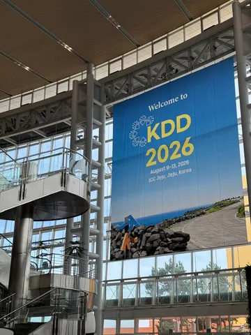
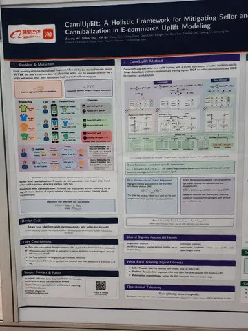
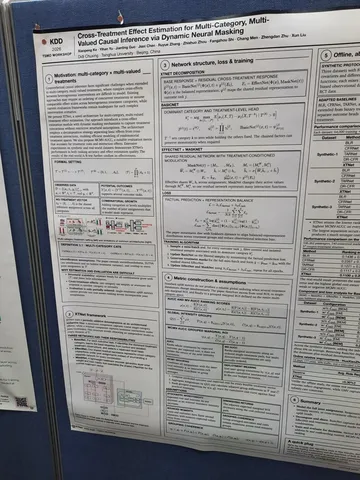
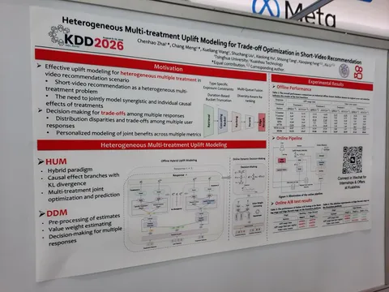
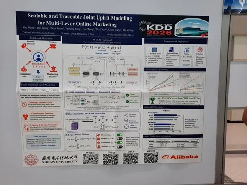

KDD 2026 в Южной Корее подошла к концу. Разберём несколько работ, связанных с uplift-моделированием, которые представили на конференции. Все они — от китайских бигтехов и с подтверждёнными онлайн-экспериментами.
Cross-Treatment Effect Estimation for Multi-Category, Multi-Valued Causal Inference via Dynamic Neural Masking (XTNet)
Работа от DiDi о том, как оценивать uplift, когда у нас несколько категорий воздействий и у каждой — своя градация интенсивности. Вместо отдельной головы под каждую комбинацию авторы разделяют эффект на базовый и кросс-эффект, а веса под конкретную комбинацию генерируют масками — архитектура не раздувается экспоненциально. Отдельно предлагают cost-aware-метрику MCMV-AUCC, учитывающую стоимость воздействий и убывающую отдачу, с доказательством меньшей ошибки ранжирования, чем у Qini и AUUC. A/B-тест в 32 городах дал +2,43% GMV — идею декомпозиции на базовый и кросс-эффект вполне можно брать на вооружение.
Scalable and Traceable Joint Uplift Modeling for Multi-Lever Online Marketing (M-DLRI)
Продолжение той же истории от Xidian и Alibaba, но с упором на экономический здравый смысл: большая скидка не должна предсказывать меньше продаж. Монотонность зашивают структурно через изотонное кодирование с интерполяцией. Экспоненциальный рост параметров лечат CP-разложением тензора взаимодействий — сложность становится линейной по числу рычагов. А слагаемые заодно дают атрибуцию: видно, какой именно рычаг тянет совместный эффект. Месяц A/B на Alimama: +5,35% GMV и +7,26% Sales. Takeaway: структурные приоры работают как регуляризация и вытягивают качество там, где комбинаций много, а данных мало.
Heterogeneous Multi-treatment Uplift Modeling for Trade-off Optimization in Short-Video Recommendation (HMUM)
Работа от конкурента TikTok — Kuaishou — рассматривает случай, когда воздействия — это не скидки, а разные стратегии ранжирования, чьи эффекты на метрики прямо конфликтуют: время в приложении против числа просмотров. Офлайн-модель — отдельные ветви под каждое воздействие, чтобы не ловить конфликт градиентов, но с общей надстройкой для синергии. Понравился аккуратный трюк: контрольные предсказания разных ветвей стягиваются KL-дивергенцией, ведь распределение «без воздействия» обязано быть одинаковым. Онлайн-часть убирает ручные константы при взвешивании конфликтующих метрик и предсказывает персональные веса ценности каждого отклика в реальном времени. Приросты в промилле, зато трейд-офф действительно снимается, и всё уже в проде с околонулевым оверхедом.
CanniUplift: A Holistic Framework for Mitigating Seller and Incentive Cannibalization in E-commerce Uplift Modeling
И, наконец, Taobao и Tmall показывают, что в маркетплейсе SUTVA нарушается сразу с двух сторон.
1. Каннибализация между продавцами: купон переключает пользователя с дорогого товара на дешёвый, локальный аплифт вырос, GMV платформы упал — лечат сверкой суммы предсказаний по всем магазинам с общим GMV пользователя, так что рост за счёт соседа штрафуется на уровне лосса.
2. Каннибализация стимулов: человек купил, но не активировал купон, и модель записывает органический спрос себе в заслугу — здесь исход раскладывают на пути с погашением и без. Baseline переоценивал суммарный эффект примерно на 35%, а после исправлений A/B дал +4,08% инкрементального GMV при −2,45% затрат. Takeaway: если оптимизируете локальную метрику в экосистеме с конкуренцией, стоит хотя бы раз просуммировать свои же предсказания и сравнить с реальностью.
#YaKDD26
Увидел интересное
ML Underhood




